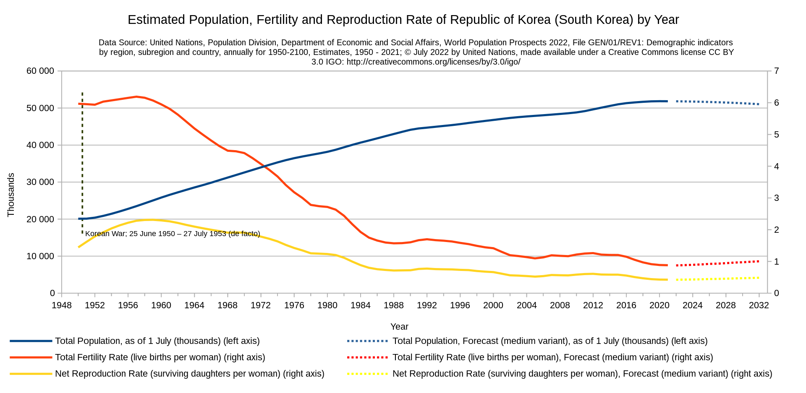

Please read this page along with the screen reading audio below.
Unveiling the Web Accessibility Challenge: Missing or Inaccurate Alt Text
Introduction
Web accessibility plays a pivotal role in ensuring that the digital landscape is inclusive for everyone, regardless of their abilities or disabilities. Among the various challenges faced in this realm, the issue of missing or inaccurate alt text emerges as a significant barrier, hindering the seamless online experience for individuals with visual impairments. Let's delve into this problem and explore its impact on users.The Predicament of Missing or Inaccurate Alt Text
Alt text, or alternative text, is a crucial element in web design that provides a textual description of images for screen readers. Screen readers rely on this alt text to convey the content and meaning of images to users who may not be able to perceive them visually. However, when alt text is missing or inaccurately described, it creates a void in the user experience and poses several challenges.1. Loss of Context
Imagine navigating a webpage filled with images that lack proper alt text like below. Users with visual impairments are left in the dark, missing out on essential context and information conveyed through those images. This can be especially problematic when images serve as links, buttons, or convey critical content integral to the understanding of the page.2. Navigational Hurdles
For users heavily reliant on screen readers, navigating a site becomes akin to solving a puzzle with missing pieces when it does not has appropriate form. Without accurate descriptions, users may struggle to comprehend the purpose of links, leading to confusion about the page's structure and content flow. For exmple, we can make a better link like "Check an article about web accessibility improvement" instead of just "Click here" or https://fuzzymath.com/blog/improve-accessibility-for-visually-impaired-users/ to provide more information to screen readers. Similarily, a text which looks like a link is also problematic.3. Exclusion from Multimedia Content
Web content is becoming increasingly multimedia-rich, with images, infographics, and videos enhancing the overall experience. However, without proper alt text, individuals with visual impairments are excluded from this visual feast, limiting their access to the complete narrative woven by the content creator.4. Impact on Educational Resources
In educational contexts, where online materials supplement learning, missing or inaccurate alt text can impede students with visual impairments from fully engaging with the course content. Diagrams, charts, and other visual aids like an example below lose their educational value when their meaning is not adequately conveyed. For example, can you fully understand the contents in the image below with only explanation in its alt text? Solutions and Best Practices
To tackle the challenge of missing or inaccurate alt text, web developers and content creators can implement several best practices:1. Thorough Alt Text Descriptions
Ensure that alt text provides a comprehensive and accurate description of the image, conveying its purpose and context effectively.